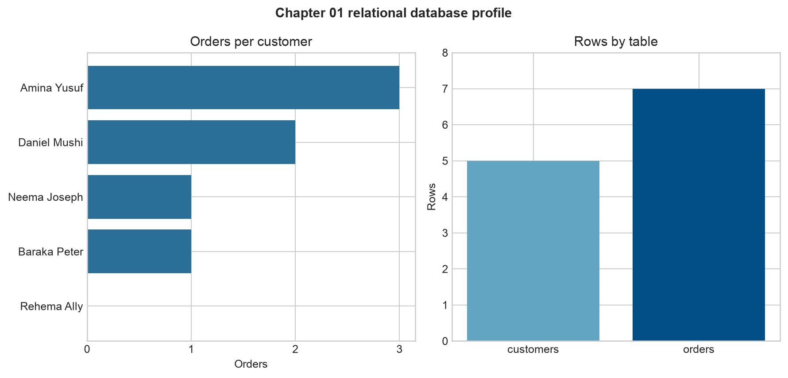

Relational Databases and Tables
Learning objectives
By the end of this chapter, you will be able to:
- explain why databases are preferable to disconnected files for many analytical systems;
- distinguish a database, a relational database, a table, a row, and a column;
- choose appropriate column types and constraints;
- identify primary and foreign keys;
- describe one-to-one, one-to-many, and many-to-many relationships;
- create and inspect a small SQLite database; and
- recognize the boundary between a table’s structure and the records stored in it.
From files to managed data
A CSV file is often an excellent starting point. It is portable, readable, and easy to load with Python. Problems emerge when several files describe the same system and must remain consistent. A customer identifier may be entered differently in two files, an order may refer to a customer who does not exist, or two people may overwrite the same file.
A database is an organized collection of data managed by software called a database management system (DBMS). The DBMS provides controlled ways to store, retrieve, update, validate, and protect data. Examples include SQLite, PostgreSQL, MySQL, SQL Server, and Oracle Database.
A relational database represents data in tables and connects those tables through shared keys. The relational model is valuable because it makes relationships explicit and allows the DBMS to enforce important rules.
| Flat-file challenge | Relational response |
|---|---|
| Customer details repeated for every order | Store customers once and reference them by key |
| Unknown or inconsistent data types | Declare column types |
| Orders for nonexistent customers | Enforce a foreign-key constraint |
| Accidental duplicate identifiers | Enforce a primary key or unique constraint |
| Multiple copies become inconsistent | Maintain one authoritative record |
Databases do not replace every file. Files remain useful for exchange, archives, and analytical outputs. A database becomes especially useful when data is related, updated repeatedly, shared by several processes, or required to satisfy consistency rules.
The relational vocabulary
Consider a small retail system with two tables:
customersstores one row per customer;ordersstores one row per order.
In relational terminology:
- a table represents one kind of entity or event;
- a row is one record;
- a column is one named attribute;
- a schema describes the database structure;
- a key identifies or connects records; and
- a constraint is a rule the database enforces.
The schema and the data are different. The schema states that customer_id is an integer primary key; the data contains values such as 101 and 102. This distinction becomes important when databases evolve and pipelines validate incoming records.
Tables, rows, and columns
A well-scoped table usually represents a single subject. Mixing customer, order, product, and payment attributes into one wide table creates repetition and makes updates harder to control.
The example customers table has this logical structure:
| Column | Type | Rule | Meaning |
|---|---|---|---|
customer_id |
INTEGER | Primary key | Stable customer identifier |
customer_name |
TEXT | Required | Customer’s display name |
region |
TEXT | Required | Reporting region |
signup_date |
TEXT | Required | ISO-formatted date in this SQLite example |
The orders table records transactions:
| Column | Type | Rule | Meaning |
|---|---|---|---|
order_id |
INTEGER | Primary key | Stable order identifier |
customer_id |
INTEGER | Foreign key | Customer who placed the order |
order_date |
TEXT | Required | ISO-formatted order date |
amount |
REAL | Nonnegative check | Order value |
status |
TEXT | Allowed-value check | Order lifecycle state |
SQLite uses a flexible type system, but declaring meaningful types still communicates intent and supports validation. Production systems such as PostgreSQL provide a wider range of strict types, including dedicated date, timestamp, numeric, JSON, and array types.
Keys create identity and relationships
Primary keys
A primary key uniquely identifies each row. Good primary keys are unique, never null, and stable over time. In this chapter, customer_id identifies customers and order_id identifies orders.
Names are poor primary keys because two people may share a name and a person’s name can change. A generated integer or UUID is usually safer. A key made from one column is a simple key; one made from several columns is a composite key.
Foreign keys
A foreign key is a column, or group of columns, whose values refer to a candidate key in another table. orders.customer_id refers to customers.customer_id.
customers.customer_id 1 ───────< many orders.customer_idWith foreign-key enforcement enabled, the database rejects an order for a customer that does not exist. This rule is called referential integrity.
Relationship patterns
Relational designs commonly express three patterns:
| Relationship | Meaning | Example |
|---|---|---|
| One-to-one | One row relates to at most one row | One employee and one current security badge |
| One-to-many | One parent relates to many children | One customer and many orders |
| Many-to-many | Many rows relate to many rows | Many orders containing many products |
A many-to-many relationship is implemented through an intermediate table. For example, order_items(order_id, product_id, quantity) links orders and products. Its primary key may combine order_id and product_id, while each column is also a foreign key.
Constraints protect data quality
Constraints convert business rules into checks performed by the database:
PRIMARY KEYprevents missing or duplicated row identities;FOREIGN KEYprotects relationships;NOT NULLrequires a value;UNIQUEprevents duplicates in a candidate key;CHECKrestricts acceptable values; andDEFAULTsupplies a value when one is omitted.
For example:
CREATE TABLE orders (
order_id INTEGER PRIMARY KEY,
customer_id INTEGER NOT NULL,
order_date TEXT NOT NULL,
amount REAL NOT NULL CHECK (amount >= 0),
status TEXT NOT NULL
CHECK (status IN ('pending', 'completed', 'cancelled')),
FOREIGN KEY (customer_id) REFERENCES customers(customer_id)
);Constraints do not eliminate the need for pipeline validation. They form the final defensive boundary that prevents invalid records from entering the stored system.
Practical: build a small SQLite database
SQLite stores a complete relational database in one file and is included with Python. It is therefore ideal for learning, local analysis, tests, and embedded applications.
The chapter package contains:
data/raw/01-customers.csvanddata/raw/01-orders.csvas source data;scripts/sql/01-create-retail-schema.sqlas the schema definition;scripts/python/01-build-retail-database.pyas the reproducible build and validation workflow; andscripts/bash/01-build-retail-database.shas a convenient command-line entry point.
From the repository root, run:
bash scripts/bash/01-build-retail-database.shThe workflow recreates data/processed/01-retail-demo.sqlite, loads both CSV files in one transaction, validates the relationship, and writes results/01-table-summary.csv plus results/figures/01-relational-table-profile.png.
The validation query summarizes customers and their orders:
SELECT
c.customer_id,
c.customer_name,
COUNT(o.order_id) AS order_count,
COALESCE(SUM(o.amount), 0) AS total_amount
FROM customers AS c
LEFT JOIN orders AS o
ON c.customer_id = o.customer_id
GROUP BY c.customer_id, c.customer_name
ORDER BY c.customer_id;The LEFT JOIN retains customers even when they have no orders. Joins are developed fully in Joins and Relational Thinking; here, the query simply verifies that the two-table design behaves as intended.

Inspect the database
If the SQLite command-line program is installed, inspect the generated database with:
sqlite3 data/processed/01-retail-demo.sqliteThen run:
.tables
.schema customers
.schema orders
SELECT * FROM customers;
SELECT * FROM orders;
PRAGMA foreign_key_check;An empty result from PRAGMA foreign_key_check means SQLite found no broken foreign-key relationships.
The same inspection is available from Python:
import sqlite3
with sqlite3.connect("data/processed/01-retail-demo.sqlite") as connection:
connection.execute("PRAGMA foreign_keys = ON")
tables = connection.execute(
"SELECT name FROM sqlite_master WHERE type = 'table' ORDER BY name"
).fetchall()
print(tables)Always enable foreign-key enforcement explicitly for each SQLite connection. Other relational database systems commonly enforce it by default.
Common design mistakes
Repeating groups in one row
Columns such as product_1, product_2, and product_3 impose an artificial limit and complicate queries. Store repeated items as rows in a related table.
Storing several values in one column
A value such as "SQL,Python,Git" is difficult to validate and join. If skills are meaningful entities, create a skills table and an employee-skills bridge table.
Using mutable labels as keys
Names, email addresses, and product descriptions can change. Use stable identifiers and place human-readable labels in separate columns.
Treating missing values as empty strings
NULL, an empty string, and zero have different meanings. Decide what absence means for each attribute and represent it consistently.
Assuming the database will infer every rule
A declared data type alone cannot express every business rule. Add suitable constraints and validate requirements that span multiple tables in the application or pipeline layer.
Check your understanding
- Why is
customer_namea weaker primary key thancustomer_id? - Which constraint prevents an order from referencing an unknown customer?
- How would you represent products that appear in many orders?
- What is the difference between a database schema and the rows stored in it?
- When might a CSV file still be preferable to a database table?
Chapter summary
A relational database organizes data into focused tables and links those tables through keys. Primary keys establish row identity; foreign keys establish valid relationships; and constraints protect essential rules. The resulting structure reduces unnecessary repetition and provides a dependable foundation for SQL queries and data pipelines.
The next chapter introduces SQL as the language for retrieving and shaping data from these tables.